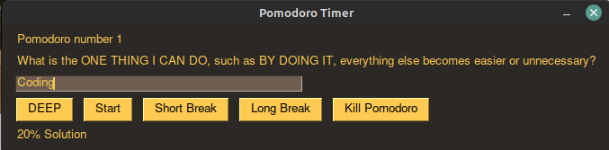

About Me
I started learning to code with Python out of curiosity in 2019. After learning the basics I enrolled in Data Sciences program in Codecademy. After the Data Sciences -path I continued learning coding with bunch of different coding books and crafting personal projects that seemed fun.
I love the challenge, constant learning and feeling of control of programming. I got interested in working as a programmer and enrolled in Full Stack Engineer career path in Codecademy. My certificate can be viewed here
I also have a Master's Degree in Social Services and am working in that field. Social services background gives me a unique set of skills and experiences that might prove helpful as a programmer working on different projects.
Fun fact! I have been programming for NaN seconds!
My GitHub repo is here
Projects
Pomodoro Work Timer

A Timer program that times your work in 25 minute sprints, after which the program starts a 5 minute break. The timer logs your working habits to a file separate file. After 4 pomodoros the program activates a longer break
Program includes a changing GUI that has distinct color and location on screen to signal whether you should be working or taking a break.
Python, GUI, Access file system
Boss Machine
The code is an API to serve information to a Boss Machine, a unique management application for today's most accomplished (evil) entrepreneurs. Routes help manage 'minions', brilliant 'million dollar ideas', and handling all the annoying meetings that keep getting added to your busy schedule.
GitHub repository hereJavascript, React, Express, Router, Back-end
Monte Carlo engine Retirement Calculator
Using the Monte Carlo Simulation to test the probability of having enough at retirement or going broke based on historical returns of stocks and bond.
The program let's one input investment types (bonds, stocks or a mix of both), starting amount of money, how much withdrawal one takes each year, minimum, most-likely and maximum years in retirement.
Program runs through different amount of cases with different starting points in time (default 50 000) and returns odds of running out of money, minimum, average and maximum amount of money based on the simulations. Lastly the program creates a bar chart of simulations (plotting only first 3000 for efficiency).
GitHub repository herePython, files, matplotlib, looping
Jamming Spotify API
Using the Monte Carlo Simulation to test the probability of having enough at retirement or going broke based on historical returns of stocks and bond.
The program let's one input investment types (bonds, stocks or a mix of both), starting amount of money, how much withdrawal one takes each year, minimum, most-likely and maximum years in retirement.
Program runs through different amount of cases with different starting points in time (default 50 000) and returns odds of running out of money, minimum, average and maximum amount of money based on the simulations. Lastly the program creates a bar chart of simulations (plotting only first 3000 for efficiency).
GitHub repository herePython, files, matplotlib, looping
Stock buy and sell alert and email program
Stock market evaluation program. Program srapes historical price data of specified stock ticker list, which is found in separate file, evaluates the historical prices against current stock prices and at preset difference in the prices triggers an email to be sent to specified email address to tell recipient to buy stock when low enough
Program also evaluates from a list of already bought stocks and their prices and emails when time to sell those stocks for specified gains. Program includes cryptocurrencies
Note: I have not included screenshot or Github link for this one, due to the nature of the program. If you want to know more, you can always contact me.
Python, Webscraping, API, Looping, Files, Emails, Excel
Find my hat terminal game

An interactive terminal game. You (as the player) need to find your hat without falling into holes. The program asks input on the area and creates a random playing area with set percentage of holes in random places and the hat placed randomly
GitHub repository hereJavascript